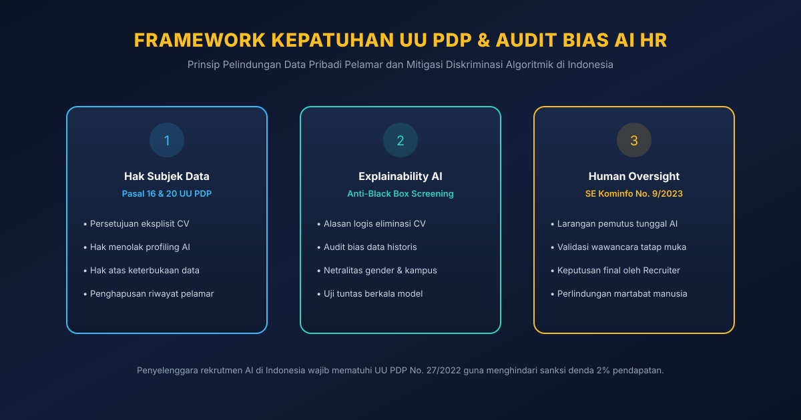

Gambar 1: Arsitektur manajemen talenta berbasis kecerdasan artifisial modern yang memadukan efisiensi analitik prediktif, pemetaan keahlian dinamis, dan perisai kepatuhan etika pelindungan data pribadi.
Poin Kunci Kajian Arsitektur (Key Takeaways)
Transformasi Menuju Dynamic Skills Graph: Manajemen talenta modern telah bergeser dari pencocokan kata kunci resume yang kaku menuju graf intelijen keahlian (Skills Intelligence Graph) yang memetakan potensi kemampuan mikro kandidat secara semantik dan adaptif.
Strategi "Talent Remix" Gartner 2026: Daripada melakukan efisiensi reaktif melalui pemutusan hubungan kerja (PHK) massal, korporasi terkemuka memanfaatkan analitik AI untuk memetakan kembali keahlian karyawan internal dan mengalihkannya ke peluang nilai bisnis baru (workforce amplification).
Mitigasi Aktif Bias Algoritmik: Model AI yang dilatih pada data penerimaan karyawan historis berisiko mengamplifikasi prasangka demografis masa lalu, sehingga menuntut audit disparitas dampak (disparate impact audit) secara berkala sebelum sistem digunakan di lantai produksi.
Hak Pelamar dan Kepatuhan UU PDP No. 27/2022: Di Indonesia, Pasal 16 & 20 UU PDP melindungi kandidat dari keputusan yang semata-mata diambil oleh pemrosesan otomatis (automated profiling), mewajibkan perusahaan membuka alasan eliminasi (explainability), serta mempertahankan pengawasan manusia (Human-in-the-Loop) sesuai amanat SE Menkominfo No. 9/2023.
Disrupsi Algoritmik dalam Rekrutmen: Antara Kecepatan dan Risiko Diskriminasi
Penerapan kecerdasan artifisial dalam fungsi sumber daya manusia (Human Resources / HR) dan manajemen talenta kini telah menjadi pilar utama transformasi digital korporat. Ledakan volume lamaran kerja daring—yang diperparah oleh kemudahan kandidat dalam menghasilkan resume berbasis AI generatif—membuat tim akuisisi talenta kewalahan. Departemen HR rata-rata menerima ratusan hingga ribuan berkas lamaran untuk satu posisi pekerjaan, menciptakan kemacetan operasional yang parah.
Sebagai respon, perusahaan mengadopsi sistem pelacakan pelamar (Applicant Tracking System / ATS) berbasis AI yang mampu menyaring ribuan resume dalam hitungan detik. Namun, efisiensi kecepatan ini kerap dibayar mahal oleh munculnya bias algoritmik sistemik (systemic algorithmic bias).
Sebagaimana telah dianalisis dalam kajian Transformasi Lanskap Kecerdasan Artifisial, algoritma komputasi tidak pernah beroperasi dalam ruang hampa yang bebas nilai; ia mencerminkan data historis yang menjadi bahan pelatihannya. Jika sebuah model AI dilatih pada data keberhasilan karyawan selama satu dekade terakhir di mana mayoritas posisi teknis diisi oleh demografi tertentu dari kampus elit tertentu, algoritma secara keliru akan menarik korelasi palsu bahwa kandidat di luar profil tersebut memiliki probabilitas kinerja yang lebih rendah. Akibatnya, talenta berpotensi tinggi dari latar belakang non-tradisional tereliminasi secara otomatis tanpa pernah dilihat oleh mata manusia.
Gambar 2: Pergeseran paradigma dari model tradisional berbasis deskripsi pekerjaan statis menuju Dynamic Talent Remix yang memanfaatkan graf keahlian AI untuk meredistribusi talenta internal.
Dalam laporan strategis Gartner (2026) bagi para pemimpin HR global, terjadi pergeseran fokus yang fundamental dari sekadar "otomasi pemotongan biaya" menuju penguatan kapasitas tenaga kerja (Workforce Amplification) melalui strategi yang disebut Talent Remix.
Gartner memperingatkan bahwa organisasi yang terlalu berfokus pada efisiensi berlebih—yaitu sekadar menggunakan AI untuk mempercepat eliminasi pelamar atau membenarkan pemutusan hubungan kerja (PHK)—akan menghadapi kekosongan kepemimpinan dan hilangnya pengetahuan institusional yang kritis. Sebaliknya, strategi Talent Remix menggunakan AI untuk membongkar kotak-kotak jabatan kaku menjadi atom-atom keahlian modular:
Dynamic Skills Intelligence: AI memetakan keahlian nyata seorang karyawan berdasarkan riwayat proyek yang diselesaikan, repositori kode, atau analisis dokumen kerja, bukan sekadar gelar ijazah formal.
Internal Talent Marketplace: Ketika sebuah unit bisnis baru membutuhkan analis data atau manajer produk, platform AI internal secara otomatis merekomendasikan karyawan dari divisi lain yang memiliki 70% keahlian dasar yang relevan, lengkap dengan kurikulum pelatihan kilat (targeted reskilling) untuk menutup kesenjangan 30% sisanya.
Kepatuhan Etika dan Hukum: UU PDP No. 27/2022 & SE Menkominfo No. 9/2023

Gambar 3: Tiga pilar kepatuhan etika dan hukum dalam rekrutmen berbasis AI di Indonesia: transparansi pemrosesan, audit bias berkala, dan verifikasi keputusan oleh staf HR manusia.
Di Indonesia, pelindungan privasi dan keadilan kesempatan kerja bagi pelamar dipayungi secara ketat oleh dua instrumen hukum vital:
UU Pelindungan Data Pribadi (UU PDP No. 27/2022): Riwayat hidup, catatan gaji sebelumnya, hasil asesmen psikologis, dan rekaman wawancara video pelamar kerja diklasifikasikan sebagai data pribadi yang wajib dilindungi kerahasiaannya. Pengendali data dilarang memanfaatkan data tersebut di luar tujuan awal rekrutmen tanpa persetujuan eksplisit kandidat.
Surat Edaran Menkominfo No. 9 Tahun 2023 tentang Etika AI: Menetapkan larangan tegas bahwa sistem AI tidak boleh dijadikan penentu tunggal dalam keputusan yang menyangkut langsung harkat kemanusiaan dan mata pencaharian seseorang. Staf HR manusia wajib memegang kewenangan otorisasi akhir (Human-in-the-Loop) untuk setiap keputusan penerimaan maupun penolakan kerja.
Pertanyaan yang Sering Diajukan (FAQ)
Bagaimana cara mengetahui apakah sistem AI penyaring resume di perusahaan kita memiliki bias tersembunyi?
Uji bias dilakukan dengan menganalisis data historis menggunakan uji disparitas dampak (Disparate Impact Analysis). Jika terdapat perbedaan rasio kelulusan yang mencolok antar kelompok demografis padahal kompetensi teknis mereka setara, maka sistem tersebut terindikasi memuat bias warisan. Audit juga dapat dilakukan melalui pengujian acak menggunakan resume sintetis dengan kualifikasi setara namun variabel identitas diubah.
Apakah perusahaan di Indonesia wajib memberi tahu pelamar jika resume mereka dipindai oleh AI?
Ya. Berdasarkan prinsip transparansi pemrosesan data pribadi dalam UU PDP No. 27/2022, pengendali data wajib menyampaikan informasi yang jelas dan mudah dipahami mengenai tujuan pemrosesan dan penggunaan analisis otomatis terhadap data kandidat sebelum pemrosesan dilakukan.
Mengapa AI tidak boleh dibiarkan mengambil keputusan pemutusan hubungan kerja (PHK) secara otomatis?
Surat Edaran Menkominfo No. 9 Tahun 2023 secara tegas melarang sistem kecerdasan artifisial diselenggarakan sebagai pemutus tunggal dalam keputusan kritis yang menyangkut harkat kemanusiaan dan mata pencaharian hidup seseorang. Keputusan mengenai kelangsungan karier seorang karyawan menuntut pertimbangan etika, evaluasi kontekstual, dan empati moral yang tidak dimiliki oleh algoritma komputasi.
1. Gartner. (2026). Top Trends for HR in 2026: The Talent Remix and AI-Driven Skills Intelligence. Gartner HR Research Publications. https://www.gartner.com.
2. McKinsey & Company. (2025). The State of AI in HR: Balancing Productivity and Ethical Accountability in People Decisions. McKinsey Organization Practice. https://www.mckinsey.com.
3. Raghavan, M., Barocas, S., Kleinberg, J., & Levy, K. (2020). Mitigating Bias in Algorithmic Hiring: Evaluating Claims and Practices. In Proceedings of the 2020 Conference on Fairness, Accountability, and Transparency (FAccT '20), 469–481. https://doi.org/10.1145/3351095.3372828.
4. Tambe, P., Cappelli, P., & Yakubovich, V. (2019). Artificial Intelligence in Human Resource Management: Challenges and a Path Forward. California Management Review, 61(4), 15–42. https://doi.org/10.1177/0008125619867910.
5. Pemerintah Republik Indonesia. (2022). Undang-Undang Republik Indonesia Nomor 27 Tahun 2022 tentang Pelindungan Data Pribadi. Lembaran Negara Republik Indonesia Tahun 2022 Nomor 196. https://peraturan.go.id.
6. Kementerian Komunikasi dan Informatika Republik Indonesia. (2023). Surat Edaran Menteri Komunikasi dan Informatika Nomor 9 Tahun 2023 tentang Etika Kecerdasan Artifisial. JDIH Kominfo. https://jdih.komdigi.go.id.
Director of PT Aigarn Akademi Artificial • Applied AI & Software Engineer
Director di PT Aigarn Akademi Artificial, praktisi Applied AI & Software Engineer, serta peraih 8 Medali Emas Olimpiade Sains Nasional (OSN). Berfokus pada perancangan arsitektur sistem agen kecerdasan artifisial otonom (Agentic AI), kedaulatan komputasi cerdas (On-Premise SLMs), orkestrasi protokol multi-agen perusahaan (Model Context Protocol), dan kepatuhan tata kelola etika teknologi berstandar UU PDP No. 27/2022. Memegang sertifikasi keahlian komputasi internasional dari IBM SkillsBuild serta aktif memimpin riset dan implementasi solusi kecerdasan buatan terapan lintas industri.